Trending and viral Steam games under $5 (last 4 years)
16 images kept, 2 dropped. Details in index.md.
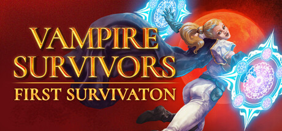
Low price point as a virality driver Vampire Survivors store capsule; the $4.99 game's capsule art is the impulse-buy face of a budget hit (price itself is not shown in the image). Vampire Survivors store capsule (2022) · source
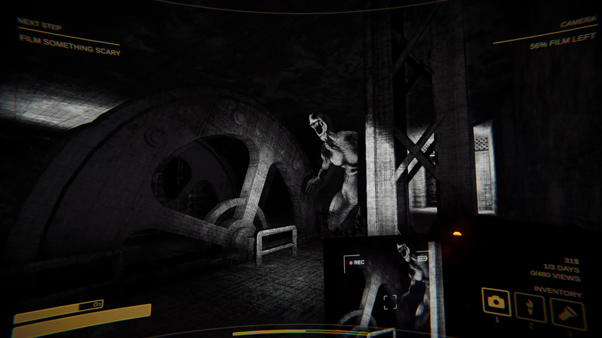
Streamer and content-creator amplification Content Warning screenshot showing the in-game camera with a views counter, a game built so players film shareable horror clips for an audience. Content Warning in-game screenshot (2024) · source
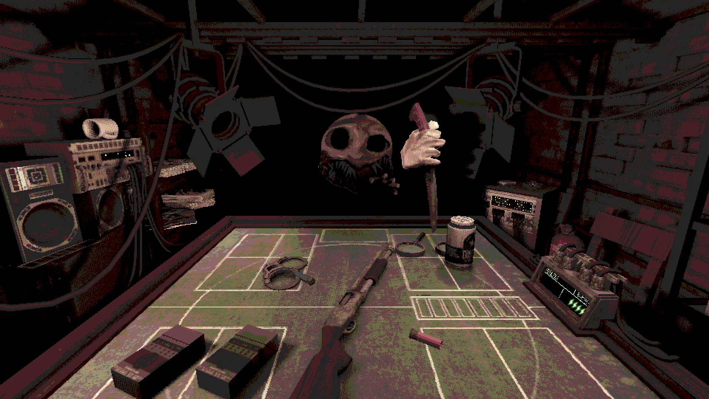
Small team or solo developer origin Buckshot Roulette ($2.99) in-game scene from a one-person project by Mike Klubnika; the single-developer origin is the store-listed developer, not visible in the image. Buckshot Roulette in-game screenshot (2024) · source
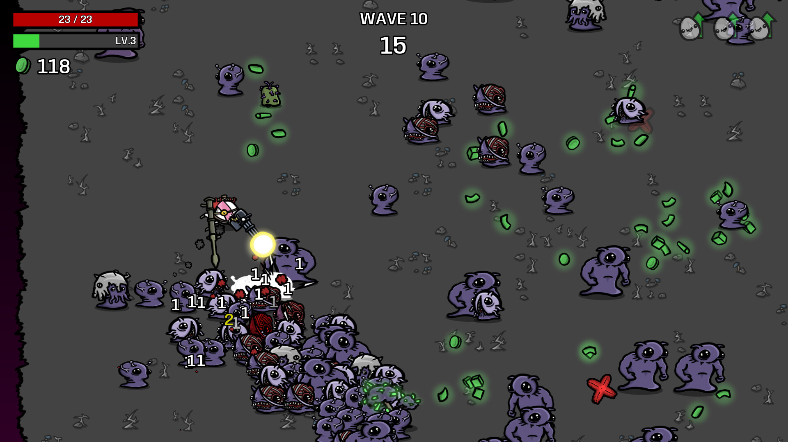
Short, replayable core loop Brotato run screenshot with a wave timer (WAVE 10, 15 seconds), showing the short round-based loop with quick restarts. Brotato in-game screenshot (2023) · source
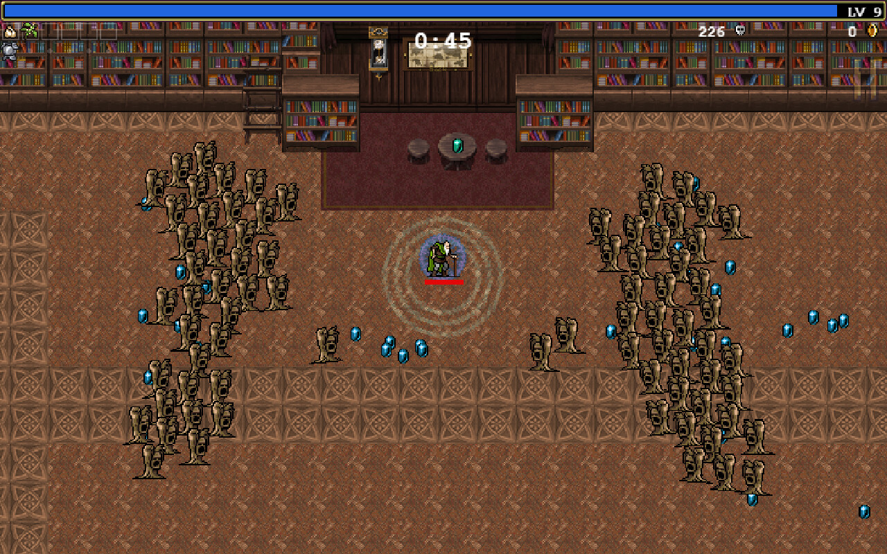
Simple readable visuals Vampire Survivors gameplay with tiny pixel sprites and a clear enemy swarm that reads at thumbnail size. Vampire Survivors in-game screenshot (2022) · source
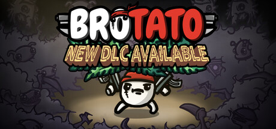
Early Access and update cadence Brotato capsule with a 'New DLC available' banner, evidence of post-launch update cadence on a $2.49 game. Brotato store capsule (2023) · source
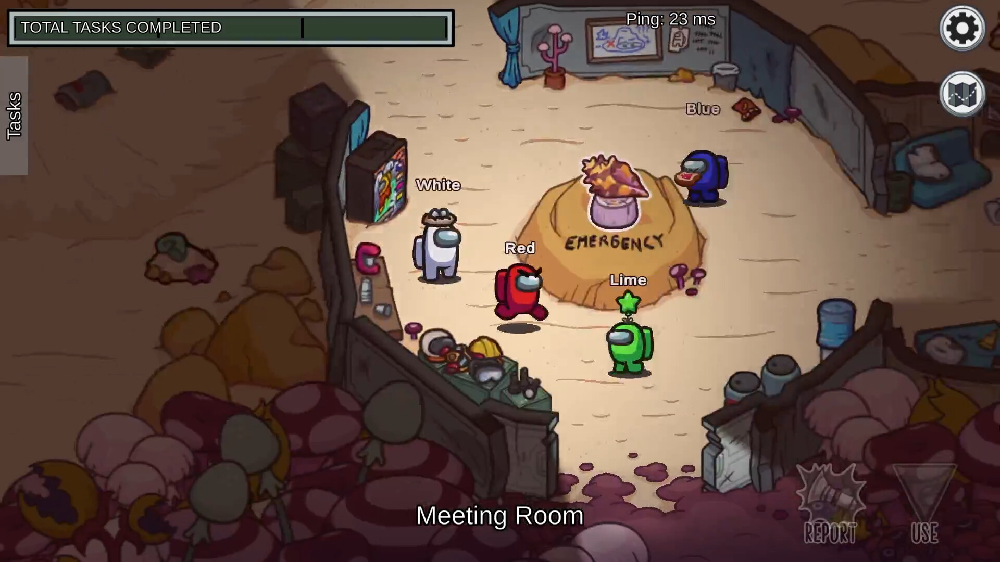
Multiplayer social party hooks Among Us meeting-room screenshot with several coloured crewmates in a lobby, the friends-invite social-deduction hook. Among Us in-game screenshot (2018) · source
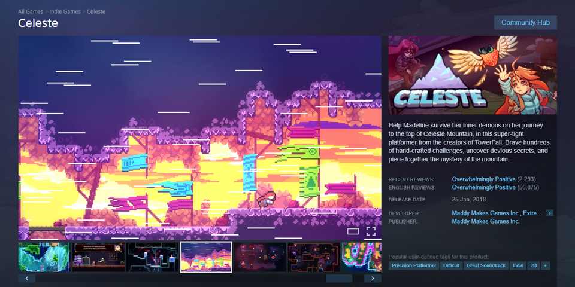
Steam store signals Steam store page showing review summary ('Overwhelmingly Positive' with counts), release date and user tags, the store signals used to judge a game (Celeste is a 2018 game costing over $5, used here only to show the page layout). Celeste Steam store page (top) (2018) · source
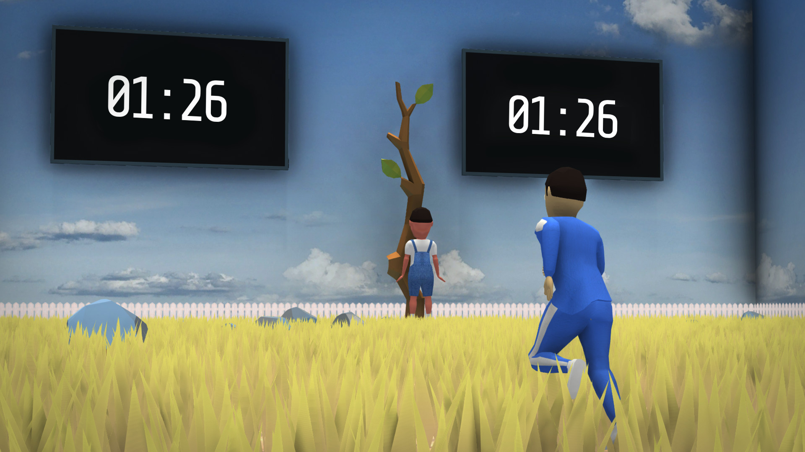
Meme and novelty premise Crab Game screenshot of a Squid Game-style red-light game with an absurd bright cartoon look, a meme-driven novelty premise. Crab Game in-game screenshot (2021) · source
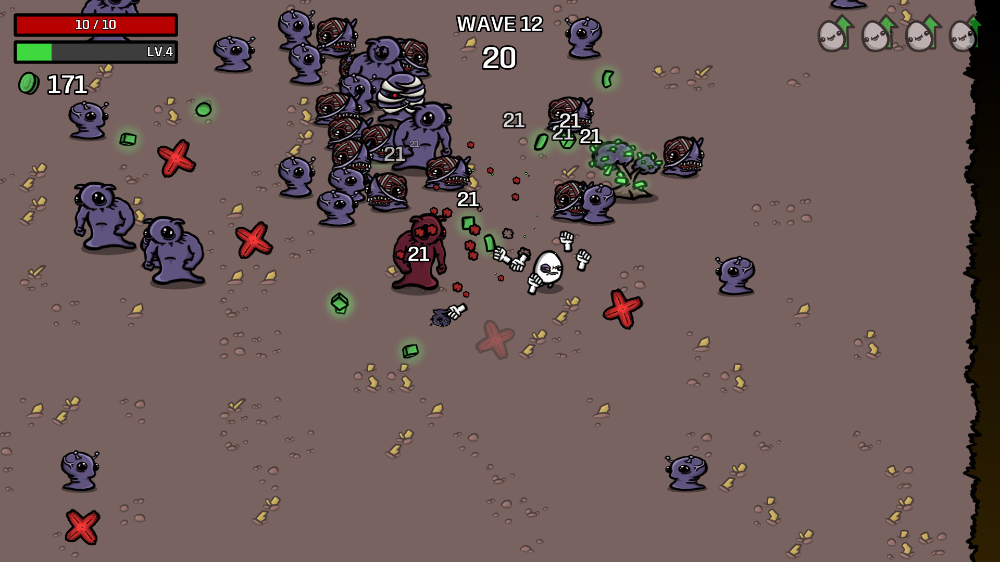
Sales and bundle pricing Brotato screenshot; weak fit for sales pricing, included as a low-priced ($2.49) game that sits under $5 through permanent low pricing. Brotato (2023) · sourceLow price point as a virality driver Buckshot Roulette capsule: a $2.99 game on sale-friendly pricing, shown through its masked-dealer art (price not shown in image). Buckshot Roulette store capsule (2024) · source
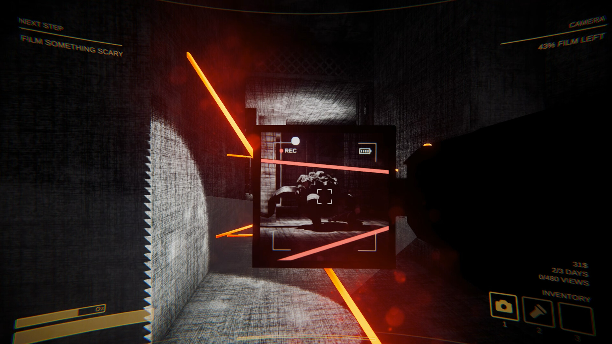
Streamer and content-creator amplification Content Warning dark-camera frame with film-left and views HUD, again a clip-making loop for streamers. Content Warning in-game screenshot (2024) · source
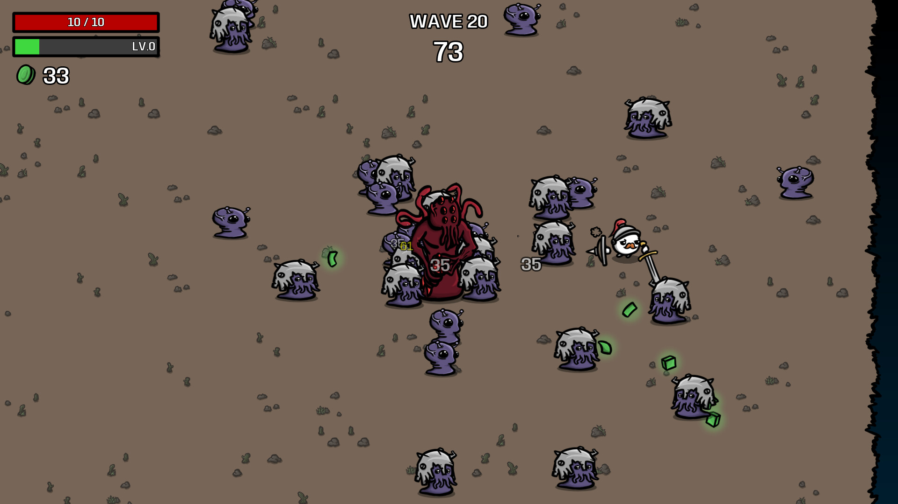
Short, replayable core loop Brotato later-wave screenshot with flat colours and tiny enemies, another short-run roguelite loop. Brotato in-game screenshot (2023) · source
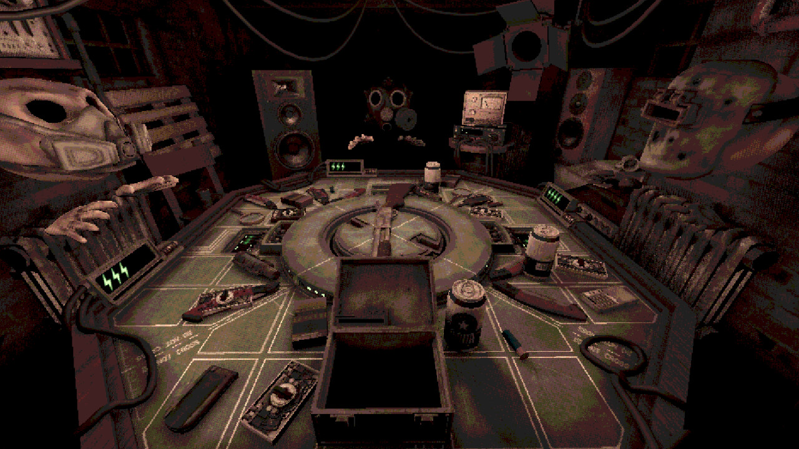
Simple readable visuals Buckshot Roulette interior with a low-resolution dithered palette, lo-fi visuals that still read clearly. Buckshot Roulette in-game screenshot (2024) · source
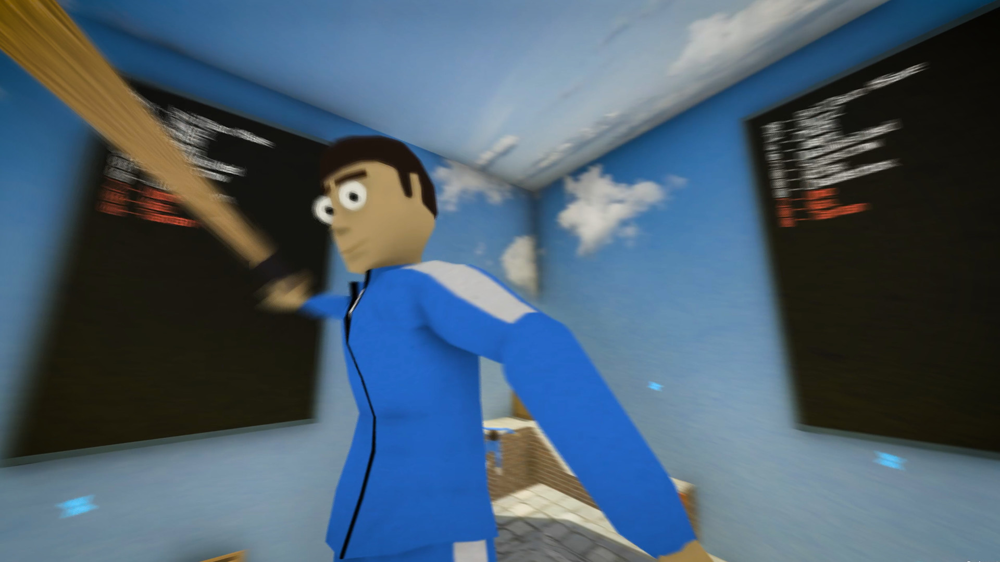
Multiplayer social party hooks Crab Game multiplayer screenshot with a countdown and a bat, a party game spread by friends and streamers. Crab Game in-game screenshot (2021) · sourceMeme and novelty premise Crab Game capsule: a free-to-play Squid Game parody, a novelty premise that travelled as a meme. Crab Game store capsule (2021) · source